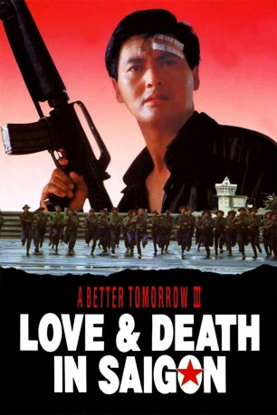

#1079 Better Tomorrow 3, A - Love and Death in Saigon
Alternativ: A Better Tomorrow III: Love and Death in Saigon (Englischer Titel)
 
 IMDB-Wertung: 5.9 / 10
IMDB-Wertung: 5.9 / 10  Metascore: 0
Metascore: 0 
Saigon 1974, kurz vor Ende des Krieges: Trotz unterzeichneter Waffenstillstandsabkommen gehen die Kämpfe in Vietnam unvermindert weiter. Trotzdem entschließt sich Mark (Chow Yun-Fat) ein letztes Mal in seine Heimat zu reisen, um seinen Onkel und seinen Cousin Michael (Tony Leung Ka Fai) vor der kommunistischen Gefahr zu retten und nach Hongkong zu holen. Dort trifft er auf die undurchsichtige, aber einflussreiche Kitty Chow (Anita Mui) und gerät schließlich in Konflikt mit Gangstern, korrupten Militärs und dem Vietcong.
Jahr: 1989
Dauer: 85 Minuten
FSK: 18
Land: Hong-Kong Studio: ScenepalmTonspuren: DD2.0 - ,
Untertitel: Englisch,
Auflösung: 1080p (1920x1080) Größe: 19968 MB
Genre: Action, Krieg
Regisseur:  Hark Tsui
Hark Tsui
Drehbuch: Yiu-ming Leung, Foo Ho Tai, Hark Tsui
Soundtrack: Lowell Lo
Darsteller:
 Yun-Fat Chow als Mark Gor
Yun-Fat Chow als Mark Gor Tony Ka Fai Leung als Cheung Chi-Mun
Tony Ka Fai Leung als Cheung Chi-Mun Anita Mui als Chow Ying-Kit
Anita Mui als Chow Ying-Kit- Kien Shih als Mun's father
- Kirk Wong als Bodyguard
- Saburô Tokitô als Ho Cheung-Ching / Tanaka
- Wai Lun Cheng als Pat
- Maggie Ho Yee Cheung als Ling
- Yeung-Wah Kam als Jimmy
- Ling Nam Lam als Bond
- Hsiang Lin Yin als General with Bond
 Chi Wai Wong als Bodyguard
Chi Wai Wong als Bodyguard- Wai Tam als Bodyguard
- Wei Ho Tu als Soldier
- Chi-Mun Ho als Mr. Ho's Board Member
- Hsin Liang als Extra
- William Cheng als
Datei: X:\FSK18-Eastern-Collections\A Better Tomorrow\Better Tomorrow 3, A - Love and Death in Saigon (1989, FSK18, 1920x1080).mkv seit 18.05.2015
Festplatte: FSK18
 Es gibt insgesamt 8 Filme in der Gruppe 'FSK18-Eastern-Collections\A Better Tomorrow'
Es gibt insgesamt 8 Filme in der Gruppe 'FSK18-Eastern-Collections\A Better Tomorrow'